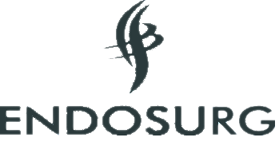

Além desses itens, você encontra muito mais em contato com nossos atendentes, solicite seu orçamento!
Na La Médic Rio, inovação é a nossa linguagem. Estamos na vanguarda do desenvolvimento de tecnologias médicas, criando soluções que antecipam as necessidades futuras da prática clínica.
Cada equipamento que oferecemos é construído com a mais alta qualidade. Nossos produtos são testados e aprovados para garantir desempenho superior, confiabilidade e segurança, proporcionando tranquilidade aos profissionais de saúde.
E tendo isso em mente, oferecemos a linha Lone Star Retractors com total exclusividade de venda no Rio de Janeiro.
Conheça nossos produtosO sistema retrator de autorretenção Lone Star oferece visualização e eficiência superiores para uma ampla gama de procedimentos cirúrgicos.
Melhor do que outro par de mãos !
O Lone Star Retractor System é visivelmente diferente, visivelmente melhor. Muito simplesmente, abre uma forma totalmente nova de operar.
O design de autorretenção libera a equipe do centro cirúrgico para realizar outras tarefas, economiza tempo e despesas e elimina a desordem no local da cirurgia.
Conheça nossos produtosCom o melhor atendimento, procuramos atender suas necessidades da melhor forma possível, proporcionando uma experiência extremamente satisfatória.

Temos muito orgulho de trabalhar com produtos inovadores e que trazem resultados superiores. Veja mais!
Preencha o formulário e um dos nossos consultores entrará em contato com você para ajudá-lo.
LA Medic Rio, a melhor o Brasil !

A empresa LA Medic Rio é genuinamente nova, fundada no ano de 2020, visa trazer uma estratégia de mercado que ajudara na qualidade e atendimento nos serviços de distribuição na área da saúde. A empresa LA Medic Rio busca consolidar a estratégia de ampliar sua atuação em diversas especialidades da área de saúde, além do mercado da cirurgia urológica, onde se originou.
Saiba mais